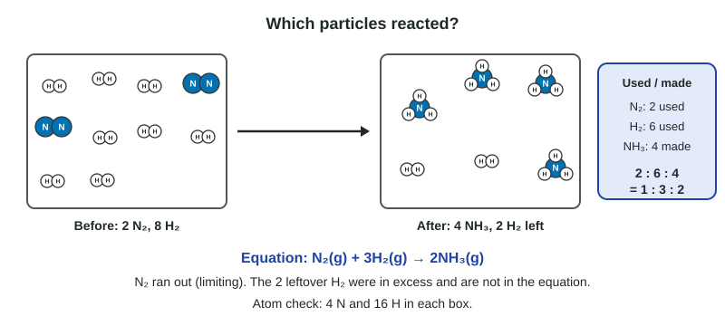

Representations of Reactions
A reaction particle diagram and a balanced equation say the same thing.
Part 1 · Hook
Why this matters
Part 2 · Before you start
What this builds on
Part 3 · Prerequisite check
Quick check before you start
1. Balance __CO + __O₂ → __CO₂. What are the coefficients, in order?
- 2, 1, 2
- 1, 1, 1
- 1, 2, 1
- 2, 2, 2
Show the answer
2CO + O₂ → 2CO₂: 2 C and 4 O on each side.
- Correct: 2, 1, 2:
- 1, 1, 1:
- 1, 2, 1:
- 2, 2, 2:
2. In a particle diagram, two joined circles of the same color most likely show
- a molecule of an element, such as O₂
- a compound
- a mixture of two elements
- two separate atoms of a compound
Show the answer
Two atoms of the same element bonded together are a molecule of that element.
- Correct: a molecule of an element, such as O₂:
- a compound:
- a mixture of two elements:
- two separate atoms of a compound:
3. Which ions does NaCl(aq) contain?
- Na⁺ and Cl⁻
- Na and Cl atoms
- NaCl molecules
- Na⁻ and Cl⁺
Show the answer
A dissolved ionic compound is separate cations and anions.
- Correct: Na⁺ and Cl⁻:
- Na and Cl atoms:
- NaCl molecules:
- Na⁻ and Cl⁺:
Part 4 · See it
See it first

Part 5 · Step by step
How it works, step by step
- Atoms are rearranged, never made or destroyeda correct diagram has the same count of each kind of atom before and after
- Coefficients give the ratio in which particles reactthe change in each count, not its starting value, gives the coefficients
- One reactant runs out firstthe other reactant still appears in the After box
- State symbols tell how each species existsa diagram shows gases spread out, solids packed, and dissolved ions apart in water
Part 6 · Key ideas
Key ideas
- A reaction particle diagram draws the particles before and after. Every atom drawn before is drawn after.
- Find coefficients from what was used and made (After minus Before), reduced to the smallest whole numbers.
- The limiting reactant runs out first. A reactant still present After was in excess; leave it out of the equation.
- State symbols: (s) solid, (l) liquid, (g) gas, (aq) dissolved in water. Ionic solids are drawn as packed arrays, never molecules.
Part 7 · Misconception
A common mistake
The wrong idea: Write the equation with the numbers of particles drawn in each box, leftovers included.
What actually happens: The equation gives the reacting ratio. Use only the particles that reacted and formed, reduce to the smallest whole numbers, and leave the excess reactant out.
Part 8 · Check yourself
Check yourself
Exam-style questions. Anything you miss goes into your review queue.
Particle view
Carbon monoxide burning
Key: dark circle labeled C, carbon atom; red circle labeled O, oxygen atom. All species are gases.
1. Which balanced equation is shown by the diagram?
- 2CO(g) + O₂(g) → 2CO₂(g)
- 4CO(g) + 3O₂(g) → 4CO₂(g) + O₂(g)
- CO(g) + O₂(g) → CO₂(g)
- CO(g) + O(g) → CO₂(g)
Show the answer
Two O₂ molecules were used (3 before, 1 after) to turn 4 CO into 4 CO₂, a 4 : 2 : 4 ratio, which is 2 : 1 : 2. The leftover O₂ did not react, so it is not part of the equation.
- Correct: 2CO(g) + O₂(g) → 2CO₂(g): Right: the ratio of what reacted, in smallest whole numbers.
- 4CO(g) + 3O₂(g) → 4CO₂(g) + O₂(g): Puts the unreacted O₂ on both sides. An equation shows what reacts in what ratio, not the leftover amount in one particular mixture.
- CO(g) + O₂(g) → CO₂(g): Unbalanced: 3 O atoms on the left and 2 on the right.
- CO(g) + O(g) → CO₂(g): Oxygen gas exists as O₂ molecules, as the diagram shows, not as single O atoms.
2. Which reactant is in excess in this mixture?
- O₂, because one O₂ molecule is left after all the CO has reacted
- CO, because there are more CO molecules than O₂ molecules to start
- CO₂, because it is the most plentiful species after the reaction
- Neither, since each atom in the Before box is also in the After box
Show the answer
The reactant left over is the one in excess. All four CO molecules were used; one O₂ remains.
- Correct: O₂, because one O₂ molecule is left after all the CO has reacted: Right: some O₂ is left unreacted.
- CO, because there are more CO molecules than O₂ molecules to start: Starting with more particles does not make a reactant the excess one; what matters is the ratio needed. Each O₂ handles two CO, so 3 O₂ could handle 6 CO.
- CO₂, because it is the most plentiful species after the reaction: CO₂ is a product, not a reactant.
- Neither, since each atom in the Before box is also in the After box: Atoms are always conserved, but that does not mean both reactants were used up.
3. How many more CO molecules would need to be added to the Before box so that both reactants are used up completely?
Type a number in molecules.
Show the answer
Three O₂ need 3 × 2 = 6 CO. The box has 4, so add 2 more. Equivalently, the one leftover O₂ needs 2 CO.
- Answer: 2 molecules
4. If this reaction were carried out in a sealed, rigid container, how would the total number of gas molecules change, and why?
- It falls from 7 to 5, since 3 reactant molecules make 2 product ones
- It stays at 7, since atoms are conserved in a reaction
- It increases, because CO₂ molecules are larger than CO molecules
- It decreases, because some atoms combine into the solid walls
Show the answer
Count: 4 CO + 3 O₂ = 7 molecules before; 4 CO₂ + 1 O₂ = 5 after. The equation 2CO + O₂ → 2CO₂ turns 3 gas molecules into 2.
- Correct: It falls from 7 to 5, since 3 reactant molecules make 2 product ones: Right: 7 molecules become 5.
- It stays at 7, since atoms are conserved in a reaction: Atoms are conserved, but molecules are not; atoms regroup into fewer, larger molecules.
- It increases, because CO₂ molecules are larger than CO molecules: The number of molecules, not their size, is what is counted, and that number goes down.
- It decreases, because some atoms combine into the solid walls: All atoms stay in gas molecules, as the After box shows; none leave the gas.
Particle view
Two elements combine
Key: blue circle X, an atom of element X; orange circle Y, an atom of element Y. Every species is a gas.
5. Which reactant limits the amount of XY₃ that forms?
- Y₂, because all six Y₂ molecules are used up
- X₂, because there are fewer X₂ molecules than Y₂ molecules
- X₂, because one X₂ molecule is left over
- Neither, because the box contains equal numbers of X and Y atoms
Show the answer
The limiting reactant is the one that runs out. No Y₂ remains, while one X₂ does; Y₂ ran out first.
- Correct: Y₂, because all six Y₂ molecules are used up: Right: Y₂ is used up, so it sets how much product forms.
- X₂, because there are fewer X₂ molecules than Y₂ molecules: Fewer particles does not mean limiting; each X₂ needs three Y₂, so X₂ goes further.
- X₂, because one X₂ molecule is left over: A leftover reactant is the one in excess, the opposite of limiting.
- Neither, because the box contains equal numbers of X and Y atoms: There are 6 X atoms and 12 Y atoms, which are not equal; in any case the ratio needed (1 : 3), not equality, decides.
6. A new box starts with 5 X₂ and 9 Y₂ molecules. How many XY₃ molecules can form?
Type a number in molecules.
Show the answer
For 5 X₂ you would need 15 Y₂; there are only 9, so Y₂ limits. 9 Y₂ × (2 XY₃ / 3 Y₂) = 6 XY₃. Check atoms: 6 XY₃ hold 6 X and 18 Y; 3 X₂ are used and 2 X₂ are left.
- Answer: 6 molecules
Part 9 · Summary
Summary
Part 10 · Up next
What comes next
Part 11 · Connections